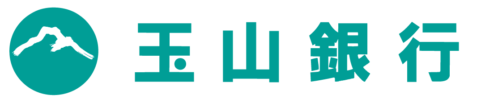
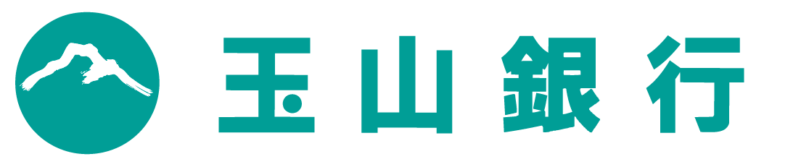

傳說在20世紀初期，在美俄太空競賽以前，第一次世界大戰之後，曾經有個跨國的秘密航太組織，他們體會到戰爭的恐怖與無用，所以不斷吸收世界上最聰明的人們，教導他們各種知識，使他們成為世界上一流的科學家。組織的終極目標是到太空中，尋找一顆適合居住的星球，然後移居到那裡，創造一個沒有紛爭的烏托邦。
在多年的研究與觀測之後，他們找到了位於三千萬光年外的藍綠色星球IM-0356，大氣成分與地球相近，是個適合居住的地方，他們打造了一艘太空船，在各項設備確認無虞後便出發了。
由於三千萬光年實在太長，所需時間也太久，所以他們勢必得想其他辦法才能在有生之年到達IM-0356，幸運的是他們在庫伯帶中發現了一個蟲洞，該蟲洞內部的時空曲率和IM-0356所在的星系的時空曲率吻合一致，科學家們相信透過該蟲洞就能連結太陽系與IM-0356所在的星系。
自由選課，是大學與中學學制最根本不同。
以13門必選修和通識課程模擬大學生選課生態。
台大資管營的課表，由你定義。
請點擊下面的連結查看課程介紹
insert_link 2019台大資管營專屬選課網站
| Day 1 | Day 2 | Day 3 | Day 4 | Day 5 |
|---|---|---|---|---|
| 大地遊戲 | 企業參訪 | 企業參訪 | 選修課程 | 呈現準備 |
| 開幕儀式 | 必修課程 | 必修課程 | 世界咖啡館-聊聊資管 | 小隊呈現 |
| Design Thinking | 選修課程 | 選修課程 | 晚會 | 結業賦歸 |
| 密室逃脫 | RPG上 | 賭場Casino |
本次營隊，我們將帶領小隊員強網知名企業Google與玉山銀行進行企業參訪，經由企業內部專業團隊的帶領與介紹，讓學員深入了解資訊管理相關企業的公司理念、經營模式與工作環境。
 Google在全世界的資料中心內營運著上百萬台的伺服器，每天處理數以億計的搜尋請求和約二十四PB用戶生成的資料。Google提供豐富的線上軟體服務，如Google Drive、Gmail，包括Orkut、Google Buzz以及Google+在內的社群網路服務。Google的產品同時也以應用軟體的形式進入用戶桌面，例如Google Chrome、Picasa、Google Talk等。另外，Google還進行了行動裝置的Android作業系統以及Google Chrome OS作業系統的開發。

長期以來，玉山以穩健正派的用心經營、清新專業的品牌形象、顧客滿意的卓越服務，提升了台灣金融業與服務業，並為這塊土地許下了永恆的承諾。邁入第三個十年，我們聚焦「深耕台灣、布局亞洲」，矢志成為金融創新的領航者，提供有溫度的感動服務，期望能夠成為員工、顧客及這塊土地的最愛。
Google在全世界的資料中心內營運著上百萬台的伺服器，每天處理數以億計的搜尋請求和約二十四PB用戶生成的資料。Google提供豐富的線上軟體服務，如Google Drive、Gmail，包括Orkut、Google Buzz以及Google+在內的社群網路服務。Google的產品同時也以應用軟體的形式進入用戶桌面，例如Google Chrome、Picasa、Google Talk等。另外，Google還進行了行動裝置的Android作業系統以及Google Chrome OS作業系統的開發。

長期以來，玉山以穩健正派的用心經營、清新專業的品牌形象、顧客滿意的卓越服務，提升了台灣金融業與服務業，並為這塊土地許下了永恆的承諾。邁入第三個十年，我們聚焦「深耕台灣、布局亞洲」，矢志成為金融創新的領航者，提供有溫度的感動服務，期望能夠成為員工、顧客及這塊土地的最愛。